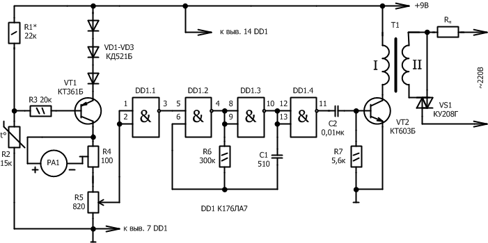

Простой терморегулятор
Для поддержания заданной температуры жидкости или воздуха в помещении можно применить терморегулятор, его принципиальная схема представлена на рис. 1. Питание устройства осуществляется от источника постоянного тока напряжением 9 В, а ток потребления составляет около 10 мА. Максимальная мощность подогревателя составляет 1 кВт. Точность поддержания заданной температуры не более ±0,5°С.

Рис. 1 - Принципиальная схема простого терморегулятора
Терморегулятор состоит из измерительного узла на транзисторе VT1, инверторов на элементах DD1.1, DD1.4, мультивибратора на элементах DD1.2, DD1.3, усилитель мощности на транзисторе VT2 и симистор VS1.
В роли датчика температуры выступает терморезистор R2. Если регулируемая температура выше установленной переменным резистором R5, на вход элемента DD1.1 поступает напряжение высокого уровня, и на его выходе устанавливается напряжение низкого уровня. При этом мультивибратор не работает, симистор VS1 закрыт, н ток через нагреватель RH не протекает. Если контролируемая температура снижается, сопротивление терморезистора R2 увеличивается и транзистор VT1 прикрывается. В случае достижения установленного уровня регулируемой температуры, поступающий на вход элемента DD1.1 сигнал переключает его, и на управляемый вход мультивибратора поступает напряжение высокого уровня. Мультивибратор устанавливается в рабочий режим. Продифференцированные его импульсы, усиливаемые транзистором VT2, трансформируются в цепь управления симистора. В начале каждого полупериода сетевого напряжения симистор открывается, пропуская номинальный ток через нагреватель. Для открывания симистора в начале каждого полупериода сетевого напряжения частота мультивибратора выбрана значительно большей частоты сети и соответствует нескольким килогерцам.
Транзистор VT1 можно применить любой из серии КТ203, КТ361 со статическим коэффициентом передачи тока 50-100; а транзистор VT2 — из серии КТ603, КТ608, КТ815 с коэффициентом не менее 50. Терморезистор R2 любого типа сопротивлением 10-20 кОм, к примеру ММТ-1. Подстроенный резистор R4 — проволочный многооборотный, например, СП5-2, R5 — типа СПО. Микроамперметр рассчитанный на ток полного отклонения стрелки 100 мкА. Микросхему DD1 можно заменить на К564ЛА7. Диоды VD1-VD3 кремниевые малой мощности любого типа. Трансформатор Т1 намотан на ферритовом кольце типоразмера К10х6х5 из феррита марки 2000НН. Обе его обмотки содержат по 50 витков провода ПЭЛШО 0,2. Чтобы повысить надежность гальванической развязки между источником питания устройства и напряжением сети на кольцо магнитопровода, а также между обмотками трансформатора следует намотать слой лакоткани. В качестве нагревателя можно использовать осветительные лампы накаливания или типовые электронагревательные элементы (ТЭН).
Настраивая терморегулятор следует помнить, что вторичная обмотка трансформатора Т1 и симистор VS1 находятся под сетевым напряжением. Налаживание устройства начинают с измерительного узла. Терморезистор R2 помещают в камеру, температура воздуха в которой соответствует максимальной температуре регулирования. После некоторой выдержки, связанной с инерционностью терморезистора, подстроенным резистором R4 устанавливают стрелку микроамперметра на последнее деление шкалы. После этого температуру в камере снижают до минимального значения температуры регулирования. Если стрелка микроамперметра отклонилась не на нулевое (или близкое к нулю) значение шкалы, необходимо подобрать сопротивление резистора R1. После этого температуру в камере повышают и с помощью образцового термометра градуируют шкалу. При этом вращают ручку переменного резистора R5 до положения, при котором нагреватель включается, и на его шкале отмечают температуру регулирования.
Данный терморегулятор можно упростить, убрав измерительный узел, то есть выполнить устройство без микроамперметра. В этом случае резисторы R1, R3, R4, транзистор VT1 и диоды VD1-VD3 исключаются из схемы, а терморезистор подключают между плюсом источника питания и верхним (по схеме) выводом переменного резистора R5. При такой схеме устройства сопротивление терморезистора может быть на несколько сотен килоом. Сопротивление переменного резистора R5 выбирают на 5…10% больше сопротивления терморезистора при минимальной температуре регулирования.